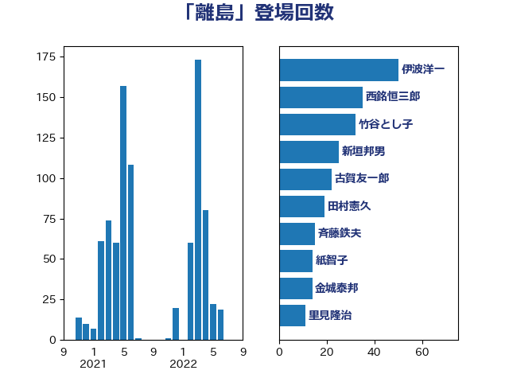

単語「離島」

| 伊波洋一 | 無所属 | 50 回 |
| 西銘恒三郎 | 自由民主党 | 35 回 |
| 竹谷とし子 | 公明党 | 32 回 |
| 新垣邦男 | 立憲民主党 | 25 回 |
| 古賀友一郎 | 自由民主党 | 22 回 |
| 田村憲久 | 自由民主党 | 19 回 |
| 斉藤鉄夫 | 公明党 | 15 回 |
| 紙智子 | 日本共産党 | 14 回 |
| 金城泰邦 | 公明党 | 14 回 |
| 里見隆治 | 公明党 | 11 回 |
| 河野義博 | 公明党 | 10 回 |
| 西岡秀子 | 国民民主党 | 10 回 |
| 赤羽一嘉 | 公明党 | 10 回 |
| 河野太郎 | 自由民主党 | 9 回 |
| 鈴木英敬 | 自由民主党 | 9 回 |
| 泉健太 | 立憲民主党 | 8 回 |
| 大西健介 | 立憲民主党 | 7 回 |
| 石川博崇 | 公明党 | 7 回 |
| 赤嶺政賢 | 日本共産党 | 7 回 |
| 佐藤英道 | 公明党 | 6 回 |
| 小泉進次郎 | 自由民主党 | 6 回 |
| 山本博司 | 公明党 | 6 回 |
| 杉本和巳 | 日本維新の会 | 6 回 |
| 石川香織 | 立憲民主党 | 6 回 |
| 秋野公造 | 公明党 | 6 回 |
| 金子恭之 | 自由民主党 | 6 回 |
| 中山展宏 | 自由民主党 | 5 回 |
| 中野洋昌 | 公明党 | 5 回 |
| 勝部賢志 | 立憲民主党 | 5 回 |
| 國場幸之助 | 自由民主党 | 5 回 |
| 大塚耕平 | 国民民主党 | 5 回 |
| 川合孝典 | 国民民主党 | 5 回 |
| 後藤祐一 | 立憲民主党 | 5 回 |
| 杉田水脈 | 自由民主党 | 5 回 |
| 石川大我 | 立憲民主党 | 5 回 |
| 菅義偉 | 自由民主党 | 5 回 |
| 足立康史 | 日本維新の会 | 5 回 |
| 阿部知子 | 立憲民主党 | 5 回 |
| 和田義明 | 自由民主党 | 4 回 |
| 宮崎政久 | 自由民主党 | 4 回 |
| 朝日健太郎 | 自由民主党 | 4 回 |
| 赤澤亮正 | 自由民主党 | 4 回 |
| 吉田宣弘 | 公明党 | 3 回 |
| 小沢雅仁 | 立憲民主党 | 3 回 |
| 川田龍平 | 立憲民主党 | 3 回 |
| 後藤茂之 | 自由民主党 | 3 回 |
| 末松信介 | 自由民主党 | 3 回 |
| 松沢成文 | 日本維新の会 | 3 回 |
| 田村貴昭 | 日本共産党 | 3 回 |
| 白石洋一 | 立憲民主党 | 3 回 |
| 福島みずほ | 社会民主党 | 3 回 |
| 篠原豪 | 立憲民主党 | 3 回 |
| 美延映夫 | 日本維新の会 | 3 回 |
| 若宮健嗣 | 自由民主党 | 3 回 |
| 谷合正明 | 公明党 | 3 回 |
| 長友慎治 | 国民民主党 | 3 回 |
| 高木かおり | 日本維新の会 | 3 回 |
| 中谷元 | 自由民主党 | 2 回 |
| 伊藤渉 | 公明党 | 2 回 |
| 佐藤正久 | 自由民主党 | 2 回 |
| 坂本哲志 | 自由民主党 | 2 回 |
| 大塚拓 | 自由民主党 | 2 回 |
| 室井邦彦 | 日本維新の会 | 2 回 |
| 宮本岳志 | 日本共産党 | 2 回 |
| 山岡達丸 | 立憲民主党 | 2 回 |
| 山本剛正 | 日本維新の会 | 2 回 |
| 岩田和親 | 自由民主党 | 2 回 |
| 岸田文雄 | 自由民主党 | 2 回 |
| 平井卓也 | 自由民主党 | 2 回 |
| 有村治子 | 自由民主党 | 2 回 |
| 杉尾秀哉 | 立憲民主党 | 2 回 |
| 榛葉賀津也 | 国民民主党 | 2 回 |
| 武田良太 | 自由民主党 | 2 回 |
| 浦野靖人 | 日本維新の会 | 2 回 |
| 渡辺猛之 | 自由民主党 | 2 回 |
| 田村智子 | 日本共産党 | 2 回 |
| 神谷裕 | 立憲民主党 | 2 回 |
| 萩生田光一 | 自由民主党 | 2 回 |
| 藤田文武 | 日本維新の会 | 2 回 |
| 足立敏之 | 自由民主党 | 2 回 |
| 重徳和彦 | 立憲民主党 | 2 回 |
| 野田佳彦 | 立憲民主党 | 2 回 |
| 青木愛 | 立憲民主党 | 2 回 |
| 中島克仁 | 立憲民主党 | 1 回 |
| 中川康洋 | 公明党 | 1 回 |
| 中西祐介 | 自由民主党 | 1 回 |
| 伊藤孝恵 | 国民民主党 | 1 回 |
| 加藤鮎子 | 自由民主党 | 1 回 |
| 北側一雄 | 公明党 | 1 回 |
| 古屋範子 | 公明党 | 1 回 |
| 吉田久美子 | 公明党 | 1 回 |
| 吉田忠智 | 立憲民主党 | 1 回 |
| 吉田豊史 | 日本維新の会 | 1 回 |
| 塩村あやか | 立憲民主党 | 1 回 |
| 太栄志 | 立憲民主党 | 1 回 |
| 奥下剛光 | 日本維新の会 | 1 回 |
| 奥野総一郎 | 立憲民主党 | 1 回 |
| 宮本徹 | 日本共産党 | 1 回 |
| 宮路拓馬 | 自由民主党 | 1 回 |
| 山口壯 | 自由民主党 | 1 回 |
| 山口那津男 | 公明党 | 1 回 |
| 山崎誠 | 立憲民主党 | 1 回 |
| 山添拓 | 日本共産党 | 1 回 |
| 岡田克也 | 立憲民主党 | 1 回 |
| 岸信夫 | 自由民主党 | 1 回 |
| 岸真紀子 | 立憲民主党 | 1 回 |
| 島尻安伊子 | 自由民主党 | 1 回 |
| 島村大 | 自由民主党 | 1 回 |
| 平山佐知子 | 無所属 | 1 回 |
| 徳永エリ | 立憲民主党 | 1 回 |
| 新藤義孝 | 自由民主党 | 1 回 |
| 早坂敦 | 日本維新の会 | 1 回 |
| 本村伸子 | 日本共産党 | 1 回 |
| 東徹 | 日本維新の会 | 1 回 |
| 松下新平 | 自由民主党 | 1 回 |
| 松川るい | 自由民主党 | 1 回 |
| 柘植芳文 | 自由民主党 | 1 回 |
| 柳ヶ瀬裕文 | 日本維新の会 | 1 回 |
| 柴田巧 | 日本維新の会 | 1 回 |
| 森山浩行 | 立憲民主党 | 1 回 |
| 池田佳隆 | 自由民主党 | 1 回 |
| 浜口誠 | 国民民主党 | 1 回 |
| 浜田聡 | NHK党 | 1 回 |
| 田名部匡代 | 立憲民主党 | 1 回 |
| 田村まみ | 国民民主党 | 1 回 |
| 石井啓一 | 公明党 | 1 回 |
| 磯崎仁彦 | 自由民主党 | 1 回 |
| 穀田恵二 | 日本共産党 | 1 回 |
| 舞立昇治 | 自由民主党 | 1 回 |
| 芳賀道也 | 国民民主党 | 1 回 |
| 藤井比早之 | 自由民主党 | 1 回 |
| 藤岡隆雄 | 立憲民主党 | 1 回 |
| 西村康稔 | 自由民主党 | 1 回 |
| 西村智奈美 | 立憲民主党 | 1 回 |
| 野間健 | 立憲民主党 | 1 回 |
| 鈴木敦 | 国民民主党 | 1 回 |
| 阿部弘樹 | 日本維新の会 | 1 回 |
| 青木一彦 | 自由民主党 | 1 回 |
| 高橋光男 | 公明党 | 1 回 |
| 高橋千鶴子 | 日本共産党 | 1 回 |
| 高良鉄美 | 無所属 | 1 回 |
| 高見康裕 | 自由民主党 | 1 回 |
| 鬼木誠 | 立憲民主党 | 1 回 |
| 黄川田仁志 | 自由民主党 | 1 回 |